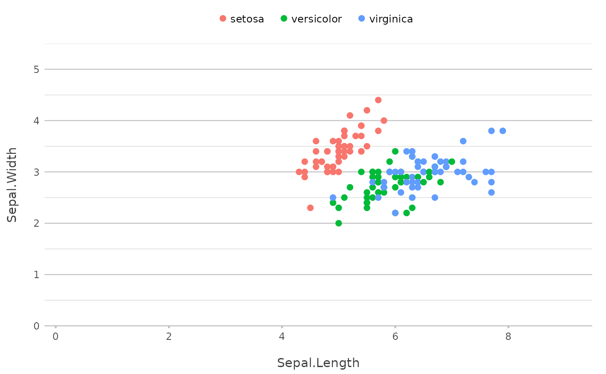
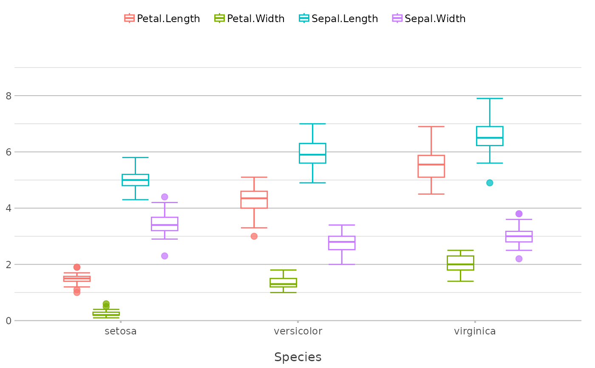
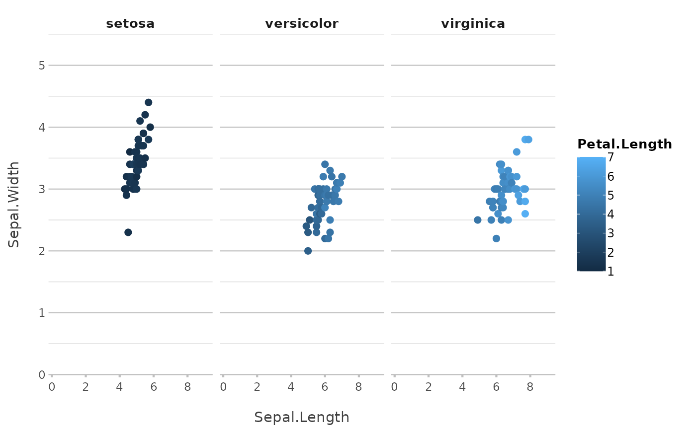
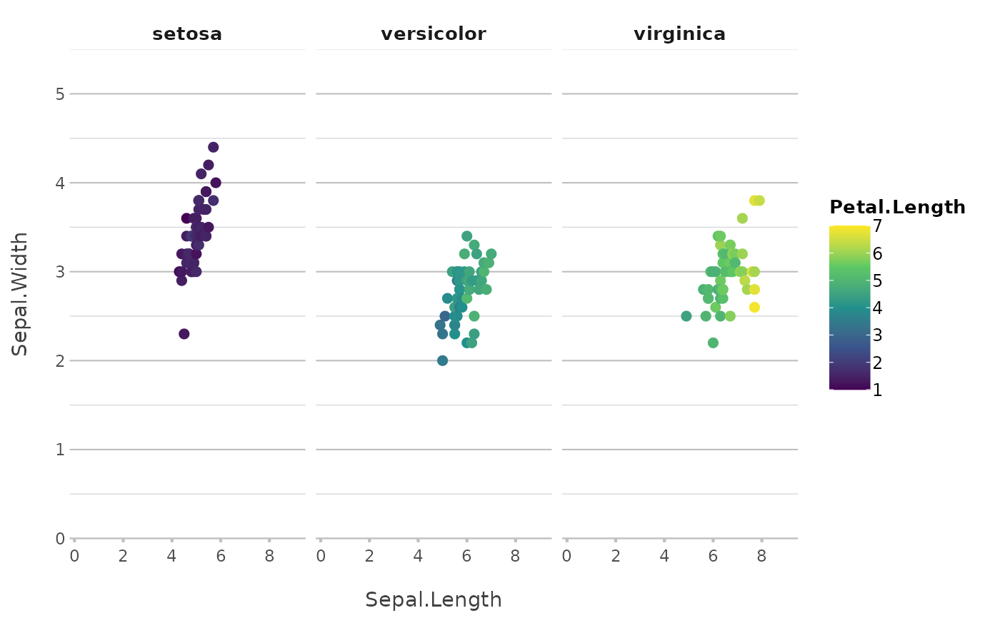
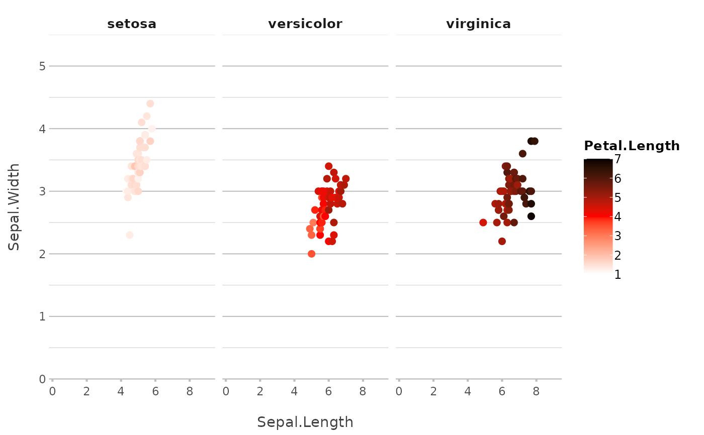
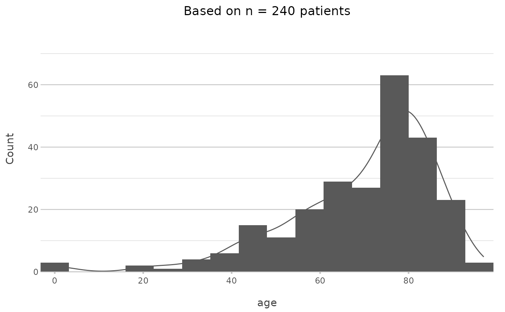

plot2() creates a complete ggplot in one call. It takes the place of the usual combination of ggplot(), aes(), a geom_*() function, scales, labels and a theme, and of the data preparation that often precedes it with group_by(), count(), mutate() or summarise(): calculations can be given in the arguments directly, such as y = n() or x = format(date, "%Y").
Besides data frames, plot2() accepts vectors, matrices, formulas, 'sf' objects and other classes; see plot2-methods.
Usage
plot2(
.data,
x = NULL,
y = NULL,
category = NULL,
facet = NULL,
type = NULL,
x.title = TRUE,
y.title = TRUE,
category.title = NULL,
title = NULL,
subtitle = NULL,
caption = NULL,
tag = NULL,
title.linelength = 60,
title.colour = getOption("plot2.colour_font_primary", "black"),
subtitle.linelength = 60,
subtitle.colour = getOption("plot2.colour_font_secondary", "grey35"),
na.replace = "",
na.rm = FALSE,
facet.position = "top",
facet.colour_fill = NULL,
facet.bold = TRUE,
facet.italic = FALSE,
facet.size = 10,
facet.margin = 8,
facet.repeat_labels_x = TRUE,
facet.repeat_labels_y = NULL,
facet.fixed_y = NULL,
facet.fixed_x = NULL,
facet.drop = FALSE,
facet.nrow = NULL,
facet.relative = FALSE,
x.date_breaks = NULL,
x.date_labels = NULL,
x.date_remove_years = NULL,
category.focus = NULL,
colour = getOption("plot2.colour", "ggplot2"),
colour_fill = NULL,
colour_transparency = 0,
x.label_angle = 0,
x.label_align = NULL,
x.label_italic = FALSE,
x.remove = FALSE,
x.position = "bottom",
x.max_items = NULL,
x.max_txt = "(rest, x%n)",
category.max_items = Inf,
category.max_txt = "(rest, x%n)",
facet.max_items = Inf,
facet.max_txt = "(rest, x%n)",
x.breaks = NULL,
x.n_breaks = NULL,
x.transform = "identity",
x.expand = NULL,
x.limits = NULL,
x.labels = NULL,
x.character = NULL,
x.drop = FALSE,
x.zoom = NULL,
y.remove = FALSE,
y.24h = FALSE,
y.age = FALSE,
y.scientific = NULL,
y.percent = NULL,
y.percent_break = NULL,
y.breaks = NULL,
y.n_breaks = NULL,
y.limits = NULL,
y.labels = NULL,
y.expand = NULL,
y.transform = "identity",
y.position = "left",
y.zoom = FALSE,
y_secondary = NULL,
y_secondary.type = NULL,
y_secondary.title = TRUE,
y_secondary.colour = NULL,
y_secondary.colour_fill = NULL,
y_secondary.scientific = NULL,
y_secondary.percent = FALSE,
y_secondary.labels = NULL,
category.type = "colour",
category.labels = NULL,
category.percent = FALSE,
category.breaks = NULL,
category.limits = NULL,
category.expand = 0,
category.midpoint = NULL,
category.transform = "identity",
category.date_breaks = NULL,
category.date_labels = NULL,
category.character = NULL,
x.sort = NULL,
category.sort = TRUE,
facet.sort = TRUE,
x.complete = NULL,
category.complete = NULL,
facet.complete = NULL,
datalabels = NULL,
datalabels.round = ifelse(isTRUE(y.percent), 2, 1),
datalabels.format = "%n",
datalabels.colour = "grey25",
datalabels.colour_fill = NULL,
datalabels.size = (3 * text_factor),
datalabels.angle = 0,
datalabels.lineheight = 1,
datalabels.percent_by = "x",
decimal.mark = dec_mark(),
big.mark = big_mark(),
summarise_function = NULL,
stacked = FALSE,
stacked_fill = FALSE,
horizontal = FALSE,
reverse = horizontal,
smooth = NULL,
smooth.method = NULL,
smooth.formula = NULL,
smooth.se = TRUE,
smooth.level = 0.95,
smooth.alpha = NULL,
smooth.linewidth = NULL,
smooth.linetype = NULL,
smooth.colour = NULL,
size = NULL,
linetype = 1,
linewidth = NULL,
binwidth = NULL,
width = NULL,
jitter_seed = NA,
violin_scale = "count",
legend = NULL,
legend.position = NULL,
legend.title = NULL,
legend.reverse = FALSE,
legend.nrow = NULL,
legend.barheight = 6,
legend.barwidth = 1.5,
legend.nbin = 300,
legend.italic = FALSE,
sankey_node_width = 0.15,
sankey_node_whitespace = 0.03,
sankey_alpha = 0.5,
sankey_remove_axes = NULL,
zoom = FALSE,
sep = " / ",
print = FALSE,
text_factor = getOption("plot2.text_factor", 1),
font = getOption("plot2.font"),
theme = getOption("plot2.theme", "theme_minimal2"),
background = getOption("plot2.colour_background", "white"),
markdown = TRUE,
data = NULL,
...
)Arguments
- .data
Data to plot. A single character value that is the name of a data frame in the calling environment (such as
plot2("df"), as used in tool calling) plots that data frame; only the calling environment is searched, not the search path.- x
Plotting 'direction' for the X-axis. This can be:
A single variable from
.data, such asx = column1A function to calculate over one or more variables from
.data, such asx = format(column1, "%Y"), orx = ifelse(column1 == "A", "Group A", "Other")Multiple variables from
.data, such asx = c(column1, column2, column2), or using selection helpers such asx = where(is.character)orx = starts_with("var_")(only allowed and required for Sankey plots usingtype = "sankey")
- y
Values to use for plotting along the Y-axis. This can be:
A single variable from
.data, such asy = column1Multiple variables from
.data, such asy = c(column1, column2)ory = c(name1 = column1, "name 2" = column2), or using selection helpers such asy = where(is.double)ory = starts_with("var_")(multiple variables only allowed ifcategoryis not set)A function to calculate over
.datareturning a single value, such asy = n()for the row count, or based on other variables such asy = n_distinct(person_id),y = max(column1), ory = median(column2) / column3A function to calculate over
.datareturning multiple values, such asy = quantile(column1, c(0.25, 0.75))ory = range(age)(multiple values only allowed ifcategoryis not set)
- category, facet
Plotting 'direction' (
categoryis called 'fill' and 'colour' inggplot2). This can be:A single variable from
.data, such ascategory = column1A function to calculate over one or more variables from
.data, such ascategory = median(column2) / column3, orfacet = ifelse(column1 == "A", "Group A", "Other")Multiple variables from
.data, such asfacet = c(column1, column2)(usesepto control the separator character)One or more variables from
.datausing selection helpers, such ascategory = where(is.double)orfacet = starts_with("var_")
The
categorycan also be a date or date/time (classDateorPOSIXt).- type
Type of visualisation to use. This can be:
A
ggplot2geom name or their abbreviation such as"col"and"point". All geoms are supported (includinggeom_blank()).Full function names can be used (e.g.,
"geom_histogram"), but they can also be abbreviated (e.g.,"h","hist"). The following geoms can be abbreviated by their first character: area ("a"), boxplot ("b"), column ("c"), histogram ("h"), jitter ("j"), line ("l"), point ("p"), ribbon ("r"), and violin ("v"). Beeswarm plots ("beeswarm", short:"bs") require theggbeeswarmpackage.Please note: in
ggplot2, 'bars' and 'columns' are equal, while it is common to many people that 'bars' are oriented horizontally and 'columns' are oriented vertically since Microsoft Excel has been using these terms this way for many years. For this reason,type = "bar"will settype = "col"andhorizontal = TRUE.One of these additional types:
"barpercent"(short:"bp"), which is effectively a shortcut to settype = "col"andhorizontal = TRUEandx.max_items = 10andx.sort = "freq-desc"anddatalabels.format = "%n (%p)"."dumbbell"(short:"d"or"db"), which setstype = "point"andhorizontal = TRUE, and adds a line between the points (usinggeom_segment()). The line colour cannot be changed. This plot type is only possible when thecategoryhas two distinct values."linedot"or"line-point"(short:"ld"or"lp"), which setstype = "line"and adds two point geoms usingadd_point(); one with large white dots and one with smaller dots using the colours set incolour. This is essentially equal to base Rplot(..., type = "b")but with closed shapes."back-to-back"(short:"b2b", or"butterfly","tornado"or"population") creates a back-to-back plot, sometimes called a Tornado diagram, a butterfly plot, or a Population Pyramid. It usesfacetto distinguish the left and right plots. Therefore,facetmust be set to (a column containing) two unique values."upset"or"UpSet"(short:"u") creates an UpSet plot, which requiresxto contain multiple variables from.datathat contain0/1orFALSE/TRUEvalues. It is also possible to providey, on which thensummarise_functionwill be applied."sankey"(short:"s") creates a Sankey plot usingcategoryfor the flows and requiresxto contain multiple variables from.data. At default, it also setsx.expand = c(0.05, 0.05)andy.limits = c(NA, NA)andy.expand = c(0.01, 0.01). The so-called 'nodes' (the 'blocks' with text) are considered the datalabels, so you can set the text size and colour of the nodes usingdatalabels.size,datalabels.colour, anddatalabels.colour_fill. The transparency of the flows can be set usingsankey_alpha, and the width of the nodes can be set usingsankey_node_width. Sankey plots can also be flipped usinghorizontal = TRUE, and the label angles can be set withdatalabels.angle."spider"or"radar"(short:"sp") creates a Spider plot using our novelCoordSpidercoordinate system. Facets are supported, always with the same scale in all facets.
Left blank. In this case, the type will be determined automatically:
"boxplot"if there is no X-axis or if the length of unique values per X-axis item is at least 3,"point"if both the y and x axes are numeric, and the option"plot2.default_type"otherwise (which defaults to"col", and accepts any value oftype, such as"line"or"l"). Usetype = "blank"ortype = "geom_blank"to not add a geom.
- title, subtitle, caption, tag, x.title, y.title, category.title, legend.title, y_secondary.title
A title to use. This can be:
A character, which supports markdown by using
md_to_expression()internally ifmarkdown = TRUE(which is the default)A function to calculate over
.data, such astitle = paste("Based on n =", n_distinct(person_id), "individuals")orsubtitle = paste("Total rows:", n()), see ExamplesAn expression, e.g. using
parse(text = "...")
The
category.titledefaults toTRUEif the legend items are numeric.category.titleandlegend.titleare the same setting; use one of them.- title.linelength
Maximum number of characters per line in the title, before a linebreak occurs.
- title.colour
Text colour of the title.
- subtitle.linelength
Maximum number of characters per line in the subtitle, before a linebreak occurs.
- subtitle.colour
Text colour of the subtitle.
- na.replace
Character to put in place of
NAvalues ifna.rm = FALSE.- na.rm
Remove
NAvalues from showing in the plot.- facet.position, facet.colour_fill, facet.bold, facet.italic, facet.size, facet.margin, facet.repeat_labels_x, facet.repeat_labels_y, facet.drop, facet.nrow, facet.relative
Additional settings for the plotting direction
facet.facet.repeat_labels_xandfacet.repeat_labels_yrepeat the axis labels in every facet, which also makes the scales of that axis free (unlessfacet.fixed_xorfacet.fixed_yisTRUE).- facet.fixed_y
A logical to indicate whether all y scales should have the same limits. If not set, this depends on the data:
TRUEonly if the coefficient of variation (standard deviation divided by mean) of the maximum y values per facet is less than 25%, otherwise every facet gets its own y scale. Both outcomes are reported in a message. Since this can change when the data change (e.g., next month's data), setfacet.fixed_y = TRUEwhen panels must be compared.- facet.fixed_x
A logical to indicate whether all x scales should have the same breaks. This acts like the inverse of
x.drop. If not set and x is numeric, the same rule as forfacet.fixed_yapplies to the maximum x values per facet.- x.date_breaks
Breaks to use when the X-axis contains dates, will be determined automatically if left blank. This accepts values such as
"1 day"and"2 years".- x.date_labels
Labels to use when the X-axis contains dates, will be determined automatically if left blank. This accepts 'Excel' date-language such as
"d mmmm yyyy":d/dd(day),ddd/dddd(weekday name),mm(month number),mmm/mmmm(month name),yy/yyyy(year),q/qq(quarter:1orQ1),w/ww(ISO week),h/hh(hour),MM(minutes),ss(seconds). Other words are kept as they are (e.g."Week ww"), and text in single quotes is always kept literally (e.g."'d' d"). A format containing%is used as astrftime()format. Month and weekday names follow the optionplot2.languageif set, and the system locale otherwise.- x.date_remove_years
A logical to indicate whether the years of all
xvalues must be unified. This will set the years of allxvalues to 1970 if the data does not contain a leap year, and to 1972 otherwise. This allows to plot years on thecategorywhile maintaining a date range onx. The default isFALSE, unlesscategorycontains all years present inx.- category.focus
A value of
categorythat should be highlighted, meaning that all other values incategorywill be greyed out. This can also be a numeric value between 1 and the length of unique values ofcategory, e.g.category.focus = 2to focus on the second legend item.- colour
Colour(s) to set, will be evaluated with
get_colour()if set. This can also be one of the viridis colours with automatic implementation for any plot:"viridis","magma","inferno","plasma","cividis","rocket","mako"or"turbo". Also, this can be a named vector to match values ofcategory, see Examples. Using a named vector can be used to manually sort the values ofcategory.- colour_fill
Colour(s) to be used for filling, will be determined automatically if left blank and will be evaluated with
get_colour().- colour_transparency
Amount of transparency for
colour/colour_fill(0 = solid, 1 = fully transparent).- x.label_angle
Angle to use for the X-axis in a counter-clockwise direction (i.e., a value of
90will orient the axis labels from bottom to top, a value of270will orient the axis labels from top to bottom).- x.label_align
Alignment for the X-axis between
0(left aligned) and1(right aligned). If not set, rotated labels (seex.label_angle) are anchored at their ticks withguide_axis(angle = ), for every angle and also whenhorizontal = TRUE.- x.label_italic
logical to indicate whether the x labels should be in italics.
- x.remove, y.remove
A logical to indicate whether the axis labels and title should be removed.
- x.position, y.position
Position of the axis.
- x.max_items, category.max_items, facet.max_items
Maximum number of items to show, including the item that holds the rest:
x.max_items = 5shows four values and the rest, seex.max_txt. Defaults to infinite. LeftNULL(default forx.max_items), this is infinite, except fortype = "barpercent"and back-to-back plots (10). The remaining values are grouped into one item and summarised using thesummarise_functionfunction. Please note: the sorting will be applied first, so that e.g.x.sort = "freq-desc"withx.max_items = 5shows the four most frequent values of the X-axis and the rest.- x.max_txt, category.max_txt, facet.max_txt
The text of the item that holds the values beyond
*.max_items. The placeholder%nis replaced with the number of values in that item, and%pwith their share of the total ofy(or of the rows, whenyis not numeric). For example, the default"(rest, x%n)"gives"(rest, x4)"for four values.- x.breaks, y.breaks
A breaks function or numeric vector to use for the axis.
- x.n_breaks, y.n_breaks
Number of breaks, only useful if
x.breaksory.breaksrespectively isNULL.- x.transform, y.transform, category.transform
A transformation function to use, e.g.
"log2". This can be:"asinh","asn","atanh","boxcox","compose","date","exp","hms","identity","log","log10","log1p","log2","logit","modulus","probability","probit","pseudo_log","reciprocal","reverse","sqrt","time","timespan","yj".- x.expand, y.expand
expansion to use for the axis, can be length 1 or 2. Left
NULL(default), they are determined automatically:x.expandadds half a category on both sides of a discrete axis and a proportion of the range on a continuous axis,y.expandadds 25% above the data; both are 0 for sf objects or when the limits are set. An explicit value is used as given.- x.limits, y.limits
Limits to use for the axis, must be length 2. Use
NAfor the highest or lowest value in the data, e.g.y.limits = c(0, NA)to have the y scale start at zero. For a discrete x axis,x.limitsare the items to show, in this order.- x.labels, y.labels, y_secondary.labels
A labels function or character vector to use for the axis.
- x.character
A logical to indicate whether the values of the X-axis should be forced to character. If not set, whole numbers that look like years (2000 to 2050) or months (exactly 1 to 12) become character when
typeis not set or is a discrete type such as"col"or"boxplot", with a message; for continuous types such as"point","line"and"area"they stay numeric. Numeric values also become character for other discrete types. Usex.character = FALSEto keep numeric values.- x.drop
logical to indicate whether factor levels should be dropped.
- x.zoom, y.zoom
A logical to indicate if the axis should be zoomed on the data, i.e., cover the range of the data instead of starting at 0. Left
NULL(default forx.zoom), the x axis is zoomed for plot types with a continuous x axis (such as histograms) only. This setsx.limits = c(NA, NA)(ory.limits) and, unlessx.expand(ory.expand) is set, a 5% expansion on both sides, likeggplot2does. It has no effect ifx.limits(ory.limits) is set.- y.24h
A logical to indicate whether the y labels and breaks should be formatted as 24-hour sequences.
- y.age
A logical to indicate whether the y labels and breaks should be formatted as ages in years.
- y.scientific, y_secondary.scientific
A logical to indicate whether the y labels should be formatted in scientific notation. If not set, scientific notation is used only for labels of one billion (
1e9) or more, or for non-zero labels below0.0001; other labels usebig.mark, e.g.2 000 000.- y.percent, y_secondary.percent
A logical to indicate whether the y labels should be formatted as percentages. Left
NULL(default fory.percent), percentages are used for density plots only.- y.percent_break
A value on which the Y-axis should have breaks if
y.percent = TRUE. LeftNULL(default), this is 0.1 (10%), widened to keep about 10 labels and narrowed if that would give three or fewer labels. An explicit value is used as given.- y_secondary
Values to use for plotting along the secondary Y-axis. This functionality is poorly supported by
ggplot2and might give unexpected results. Setting the secondary Y-axis will set the colour to the axis titles.- y_secondary.type
Type of the secondary series, see
type. The default (NULL) is a line with points if the primary type is a column or bar plot, so that the secondary series does not cover the bars, and the primary type otherwise.- y_secondary.colour, y_secondary.colour_fill
Colours to set for the secondary Y-axis, will be evaluated with
get_colour(). LeftNULL(default), the second colour of theplot2.colouroption is used.- category.type
Type of the
category, one or more of:"colour"(default),"shape","size","linetype","linewidth","alpha". There is no need to set"fill", asplot2handles colour-setting internally and determines automatically whether thecolourorfillaesthetic must be used.- category.labels, category.percent, category.breaks, category.expand, category.midpoint
Settings for the plotting direction
category.- category.limits
Limits to use for a numeric category, must be length 2. Use
NAfor the highest or lowest value in the data, e.g.category.limits = c(0, NA)to have the scale start at zero. If not set, the limits are the range of the data, rounded outwards to pretty values withpretty()(e.g., values from 12 to 87 give limits 0 to 100). With three colours andcategory.midpointset, the limits are made symmetric around the midpoint.- category.date_breaks
Breaks to use when the category contains dates, will be determined automatically if left blank. This will be passed on to
seq.Date(by = ...)and thus can be: a number, taken to be in days, or a character string containing one of "day", "week", "month", "quarter" or "year" (optionally preceded by an integer and a space, and/or followed by "s").- category.date_labels
Labels to use when the category contains dates, will be determined automatically if left blank. This accepts 'Excel' date-language such as
"d mmmm yyyy".- category.character
A logical to indicate whether the values of the category should be forced to character. If not set, whole numbers that look like years (2000 to 2050) or months (exactly 1 to 12) become character, with a message. Use
category.character = FALSEto keep numeric values.- x.sort, category.sort, facet.sort
Sorting of the plotting direction.
category.sortandfacet.sortdefault toTRUE;x.sortdefaults toNULL, which sorts text and factors asTRUEand leaves continuous values (such as dates and numbers) unsorted. Applying one of the sorting methods will transform the values to an ordered factor, whichggplot2uses to orient the data. Valid values are:A manual vector of values
TRUE: sort factors on their levels, otherwise sort ascending on alphabet, while maintaining numbers in the text (numeric sort)FALSE: sort according to the order in the dataNULL: sort automatically, as described above"asc","alpha"or"alpha-asc": sort asTRUE"desc"or"alpha-desc": sort factors on their reversed levels, otherwise sort descending on alphabet, while maintaining numbers in the text (numeric sort)"order"or"inorder": sort asFALSE"freq"or"freq-desc": sort descending according to the frequencies ofycomputed bysummarise_function(highest value first)"freq-asc": sort ascending according to the frequencies ofycomputed bysummarise_function(lowest value first)
- x.complete, category.complete, facet.complete
A value to complete the data. This makes use of
tidyr::full_seq()andtidyr::complete(). For example, usingx.complete = 0will applydata |> complete(x = full_seq(x, ...), fill = list(y = 0)), crossed with the values ofcategoryandfacetif set. Numeric values and dates are completed withtidyr::full_seq()at their observed resolution, date-times at their observed interval, and character values and factors with their unique values or levels. Using valueTRUE(e.g.,x.complete = TRUE) is identical to using value0.- datalabels
Values to show as datalabels, see also
datalabels.format. This can be:NULL(default): automatic. This shows the values ofyin column-type plots, or when plotting spatial 'sf' data, the values of the first column, with a maximum of 25 labels and none for continuous plot types such as lines and points.TRUEto always show the values ofy, without the maximum of 25 labels, orFALSEto remove datalabelsA function to calculate over
.data, such asdatalabels = paste(round(column1), "\n", column2)
- datalabels.round
Number of digits to round the datalabels, applies to both
"%n"and"%p"for replacement (seedatalabels.format).- datalabels.format
Format to use for datalabels. This can be a function (such as
euros()) or a text. For the text,"%n"will be replaced by the count number, and"%p"will be replaced by the percentage (seedatalabels.percent_by). Usedatalabels.format = NULLto not transform the datalabels.- datalabels.colour, datalabels.colour_fill, datalabels.size, datalabels.angle, datalabels.lineheight
Settings for the datalabels. Rotated datalabels (
datalabels.angle) start or end at their bar with a small fixed gap; ify.expandandy.limitsare not set, the value axis gets extra room for long rotated labels, estimated for a figure of about 6 by 4 inches.- datalabels.percent_by
Group within which the
"%p"percentages ofdatalabels.formatsum to 100%. This can be:"x"(default): within each x value and facet, so that the stacked or dodged bars of one x value sum to 100%. Without acategory, each x value has a single bar, so this is the same as"facet"."category": within each category and facet"facet": within each facet"total": over all data in the plot
- decimal.mark
Decimal mark, defaults to
dec_mark().- big.mark
Thousands separator, defaults to
big_mark().- summarise_function
A function to use if the data has to be summarised, see Examples. Left
NULL(default), this issum(), except whenycontains several columns (then the values are not summarised). UseFALSEto not summarise the data at all.- stacked
A logical to indicate that values must be stacked, or
"fill"to stack them to 100% (the same asstacked_fill = TRUE).- stacked_fill
A logical to indicate that values must be filled (i.e., stacked to 100%). If
TRUE, this takes precedence overstacked.- horizontal
A logical to turn the plot 90 degrees using
coord_flip(). This option also updates some theme options, so that e.g.,x.label_italicwill still apply to the original X-axis.- reverse
A logical to reverse the values of
category. Uselegend.reverseto reverse the legend ofcategory.- smooth
A logical to add a smooth. In histograms, this will add the density count as an overlaying line (default:
TRUE). In all other cases, a smooth will be added usinggeom_smooth()(default:FALSE).- smooth.method, smooth.formula, smooth.se, smooth.level, smooth.alpha, smooth.linewidth, smooth.linetype, smooth.colour
Settings for
smooth.- size
Size of the geom. Defaults to
2for geoms point, jitter, and beeswarm;4for UpSet plots (usingtype = "upset");5for dumbbell plots (usingtype = "dumbbell");0.75otherwise.- linetype
Linetype of the geom, only suitable for geoms that draw lines. Possible options are:
"solid"(default)"dashed""dotted""dotdash""longdash""twodash"
Both numbers and text are supported, e.g.,
linetype = 2andlinetype = "dashed"yield the same results.- linewidth
Linewidth of the geom, only suitable for geoms that draw lines. Defaults to:
- binwidth
Width of bins (only useful for
type = "histogram"), can be specified as a numeric value or as a function that calculates width fromx, seegeom_histogram(). It defaults to approx.diff(range(x))divided by 12 to 22 based on the data.- width
Width of the geom. Defaults to
0.66for geoms boxplot, violin and jitter, and to0.5otherwise.- jitter_seed
Seed (randomisation factor) to be set when using
type = "jitter".- violin_scale
Scale to be set when using
type = "violin", can also be set to"area".- legend
A logical to show (
TRUE) or hide (FALSE) the legend, i.e. the box explaining the values ofcategory. The defaultNULLshows it when the plot has acategory.- legend.position
Position of the legend. This can be:
"top","right","bottom"or"left", can be abbreviated"inside", to place the legend inside the plot area at ggplot2's default positionTwo numbers between 0 and 1, to place the legend inside the plot area at these relative coordinates, e.g.
c(0.95, 0.95)for the top right"none",FALSEorNAto remove the legend
The default
NULLsets it automatically:"right"for numericcategoryvalues and 'sf' plots, and"top"otherwise.- legend.reverse, legend.barheight, legend.barwidth, legend.nbin, legend.italic, legend.nrow
Other settings for the legend.
- sankey_node_width
Width of the vertical nodes in a Sankey plot.
- sankey_node_whitespace
Whitespace between the nodes in a Sankey plot.
- sankey_alpha
Alpha of the flows in a Sankey plot.
- sankey_remove_axes
Logical to indicate whether all axes must be removed in a Sankey plot.
- zoom
A logical to indicate if the plot should be scaled to the data, i.e., not having the x and y axes to start at 0. This is identical to setting
x.zoom = TRUEandy.zoom = TRUE.- sep
Separator character to use if multiple columns are given to either of the three directions:
x,categoryandfacet, e.g.facet = c(column1, column2).A logical to indicate if the result should be printed instead of just returned.
- text_factor
Text factor to use, which will apply to all texts shown in the plot.
- font
Font (family) to use, can be set with
options(plot2.font = "..."). Can be any installed system font or any of the > 1400 font names from Google Fonts. Custom fonts require theshowtext,showtextdbandsysfontspackages. A Google Font that is not installed is downloaded once into the user cache folder of plot2 (tools::R_user_dir("plot2", "cache")); fonts that have not been used for 90 days are removed from it automatically. The font is applied only while the plot is drawn, so other plots in the session are not affected. When using custom fonts in R Markdown, be sure to set the chunk optionfig.showtext = TRUE, otherwise an informative error will be generated.- theme
A valid
ggplot2theme to apply, orNULLto use the defaulttheme_grey(). This argument accepts themes (e.g.,theme_bw()), functions (e.g.,theme_bw) and characters themes (e.g.,"theme_bw"). A partial theme, such astheme(panel.background = element_blank()), is added on top oftheme_minimal2(), and its elements take precedence over plot2's own settings. The default istheme_minimal2(), but can be set withoptions(plot2.theme = "...").- background
The background colour of the entire plot, can also be
NAto remove it. Will be evaluated withget_colour(). Only applies whenthemeis notNULL.- markdown
A logical to turn all labels and titles into plotmath expressions, by converting common markdown language using the
md_to_expression()function (defaults toTRUE).- data
Data for formula notation only, e.g.
plot2(mpg ~ hp, data = mtcars), which is the same asmtcars |> plot2(mpg ~ hp). A formula takes the formy ~ x + category + facetory ~ x + category | facet; terms can be expressions, such aslog(mpg) ~ hp. For other input,datagives an error: pass the data as the first argument instead.- ...
Any argument to give to the geom. This will override automatically-set settings for the geom.
Value
A ggplot object.
Details
Plotting directions
A plot has up to four directions: x, y, category (the colours, called 'colour' and 'fill' in ggplot2) and facet (separate panels). Each can be a column or a calculation on the data. Groups of x, category and facet that contain several values are summarised with summarise_function, and each direction has its own settings, such as x.sort and category.sort for the order of the values, and x.max_items and category.max_items to show only the first values and combine the rest into one. Directions that are not given are chosen from the data, see Automatic choices below.
Plot types
type accepts every ggplot2 geom and adds the types "barpercent", "linedot", "dumbbell", "back-to-back", "sankey", "spider" and "upset". Without type, the type follows from the data. See vignette("supported_types", package = "plot2") for every type with its data requirements.
The result
The result is an ordinary ggplot object: it can be extended with + and any ggplot2 function, with the add_*() functions, which add layers with unquoted variables, and its layers can be reordered with move_layer(). The default theme is theme_minimal2(), and the colours are set with colour and colour_fill, which accept any value of get_colour().
Text and numbers
Titles and labels support markdown (such as "**bold**" and "*italic*") and calculations on the data, such as title = paste("Patients in", min(format(date, "%Y"))). The font can be any installed system font or a Google Font (font). Numbers use the decimal and big marks of dec_mark() and big_mark(), and the language of generated text follows the plot2.language option; see plot2-options for all options.
Further reading
vignette("plot2", package = "plot2") introduces the package step by step. The package website has articles on colours and themes, maps, fonts, and plot2() for ggplot2 users. create_interactively() builds a plot in a Shiny app and shows the code that creates it.
The generic plot2() currently has 153 arguments, all with a default value except .data and ....
Automatic choices
Like base R's plot(), plot2() decides what is not given. Every decision follows a fixed rule, is announced in a message (in interactive sessions, see the plot2.silent option in plot2-options), and is overridden by setting the argument concerned. The rules are:
What to plot
y: a column namedn, otherwise the first numeric column (the second one ifxis also chosen automatically);y = n()to count rows if the data have no numeric column, or fortype = "barpercent"and Sankey plots.x: the first numeric column if there is noxand the data have several numeric columns, otherwise the first column not used elsewhere.category: the first character or factor column if neitherxnorcategoryis given and the data have more than two columns; for 'sf' data, the first numeric column.type: a boxplot if there is nox, or if every group ofx,categoryandfacethas at least three values; points ifxandyare both numeric; a histogram ifxis the only numeric column; otherwise theplot2.default_typeoption (columns). A matrix with identical row and column names becomes a heatmap ("tile").summarise_function:sum()if groups contain several values (seesummarise_function).
Axes and scales
x.characterandcategory.character:TRUEif the values are whole years from 2000 to 2050, or exactly the months 1 to 12 (forxonly in discrete plot types);x.characteralso ifxis numeric in a discrete plot type, or ifx.sortis set.x.date_remove_years:TRUEifcategorycontains the years of a datex.x.date_breaks,x.date_labels,category.date_breaksandcategory.date_labels: based on the range of the dates.facet.fixed_xandfacet.fixed_y: the same scale in all facets if the maxima per facet differ by less than 25% (coefficient of variation), free scales otherwise;facet.repeat_labels_y = FALSEwith a fixed y scale.x.expandandy.expand: 0 if the limits are set.y.percent:TRUEfor density plots;y.percent_break: about 10 labels.y.scientific:TRUEif a non-zero label would be 1e9 or larger, or smaller than 1e-4.category.midpoint: the centre of the category scale, for three colours.binwidth: based on the data for histograms, which also getsmooth = TRUE.
Labels and layout
datalabels: the values ofyin column-type plots, at most 25 and none for continuous plot types such as points and lines; for 'sf' data, the first character column, centred on the areas (datalabels.centroid = TRUE).legend.position:"right"for numeric categories and 'sf' data,"top"otherwise; numeric categories also get a legend title.sankey_remove_axes:TRUEfor Sankey plots.
Argument names
The arguments follow one naming rule: <argument>.<setting>, where the part before the dot is itself an argument of plot2() (x, y, category, facet, y_secondary, title, subtitle, datalabels, smooth or legend) and the setting is written in snake case, e.g. x.label_angle or facet.repeat_labels_x. All other arguments are plain snake case, e.g. colour_fill, sankey_node_width or jitter_seed. The exceptions are names known from base R: na.rm, na.replace, decimal.mark and big.mark.
A default of NULL means that plot2() determines the value automatically, often announced in a message. An explicit value is always used as given.
See also
vignette("plot2", package = "plot2") and vignette("supported_types", package = "plot2"); plot2-methods for the methods per object class; add_type() and move_layer() to extend a plot; get_colour() and theme_minimal2() for colours and the theme.
Examples
# without variables, plot2() determines them: two numeric columns give points
iris |>
plot2()
#> Using x = Sepal.Length
#> Using y = Sepal.Width
#> Using category = Species
#> Using type = "point" since both axes are numeric

# the arguments are in this order: x, y, category, facet
iris |>
plot2(Sepal.Length, Sepal.Width, Petal.Length, Species,
colour = "viridis")
#> Using type = "point" since both axes are numeric
#> Assuming facet.fixed_x = TRUE since the three x scales differ by less than 25%
#> Assuming facet.fixed_y = TRUE since the three y scales differ by less than 25%
#> Assuming facet.repeat_labels_y = FALSE since y has fixed scales
 # y can be several columns, also with selection helpers
iris |>
plot2(x = Species, y = where(is.double))
#> Using y = c(Petal.Length, Petal.Width, Sepal.Length, Sepal.Width)
#> Using type = "boxplot" since all groups in Species and category contain at least three values
# y can be several columns, also with selection helpers
iris |>
plot2(x = Species, y = where(is.double))
#> Using y = c(Petal.Length, Petal.Width, Sepal.Length, Sepal.Width)
#> Using type = "boxplot" since all groups in Species and category contain at least three values

# y can be any calculation; datalabels are added for columns
admitted_patients |>
plot2(hospital, n(), gender)

# sorting and stacking are single arguments
admitted_patients |>
plot2(hospital, n(), gender,
x.sort = "freq-asc",
stacked = TRUE)
#> Applying x.sort = "freq-asc" using summarise_function = sum

# set the plot type explicitly
admitted_patients |>
plot2(hospital, median(age), gender, type = "dumbbell")

# titles support calculations too
admitted_patients |>
plot2(age, type = "hist",
title = paste("Based on n =", n_distinct(patient_id), "patients"))
#> Using type = "histogram"
#> Using binwidth = 6.4 based on data
#> Assuming smooth = TRUE for type = "histogram"

# a correlation matrix becomes a heatmap
mtcars |>
cor() |>
plot2()
#> Assuming type = "tile" since the matrix contains identical row and column names
#> Omitting printing of 121 datalabels - use datalabels = TRUE to force printing
 # many more examples, including Sankey, spider and geographic plots,
# are in the vignettes:
# vignette("plot2", package = "plot2")
# vignette("supported_types", package = "plot2")
# many more examples, including Sankey, spider and geographic plots,
# are in the vignettes:
# vignette("plot2", package = "plot2")
# vignette("supported_types", package = "plot2")